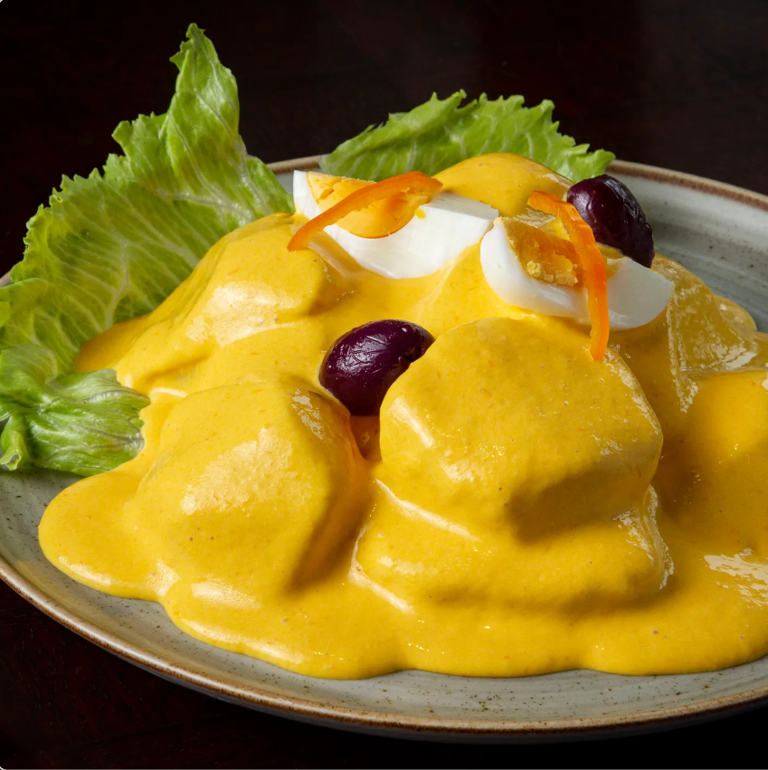
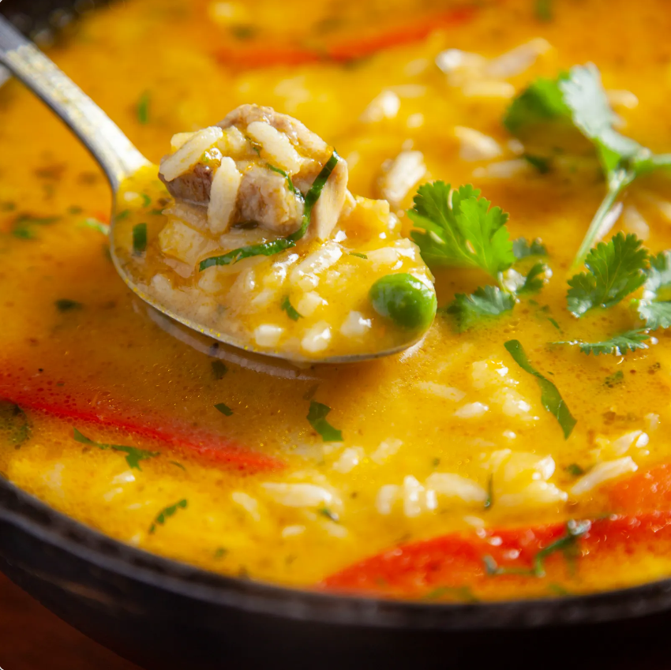
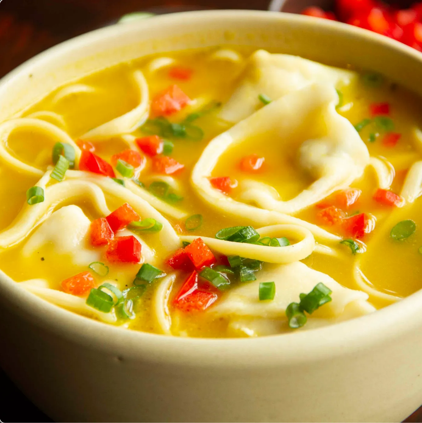
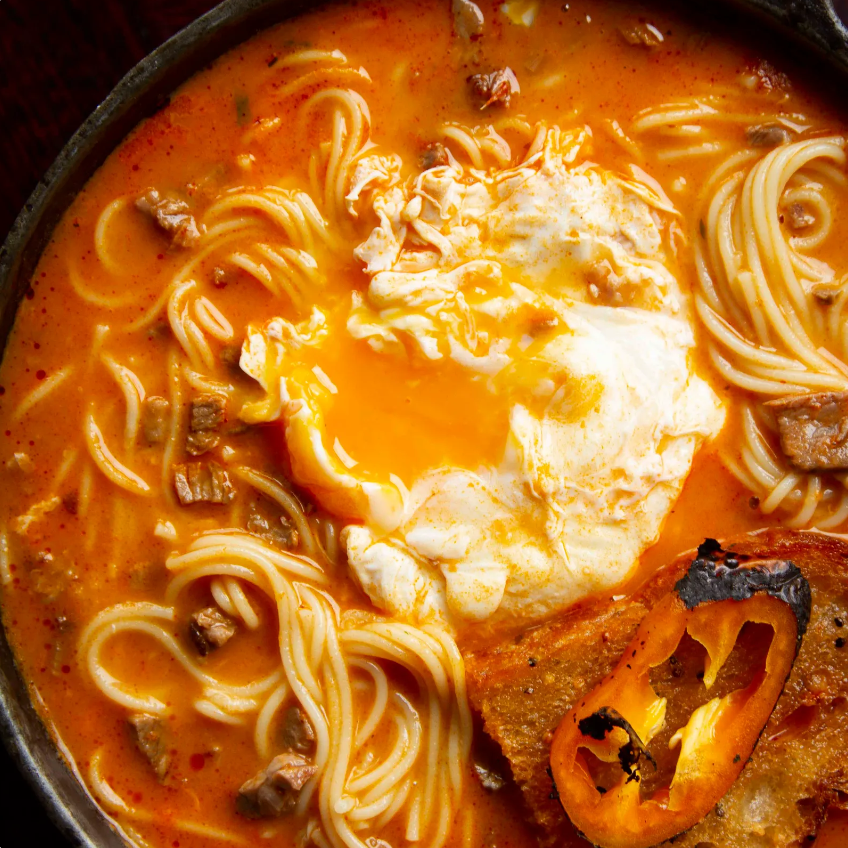
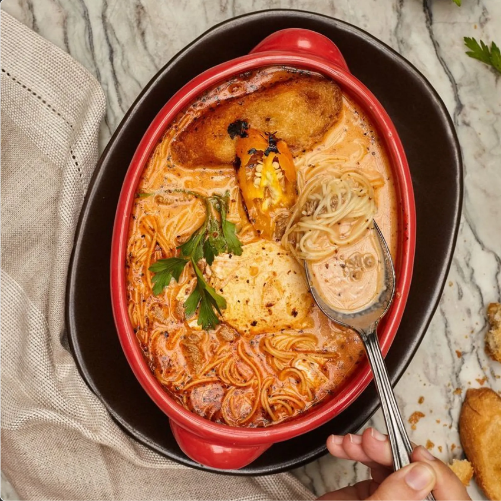
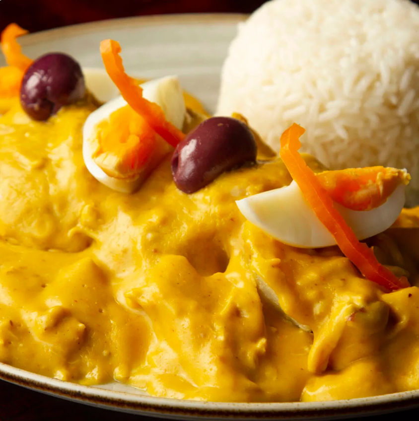
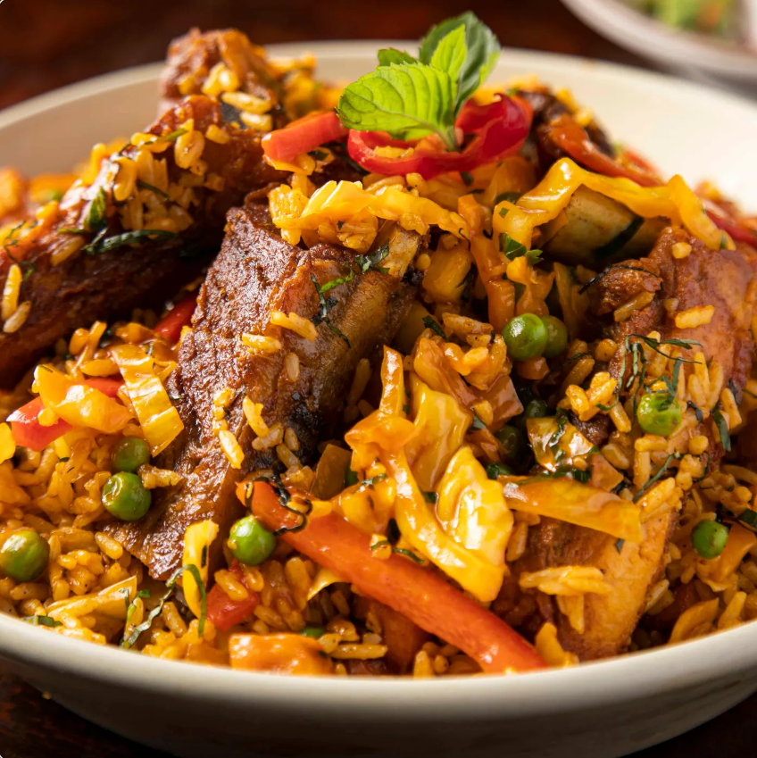
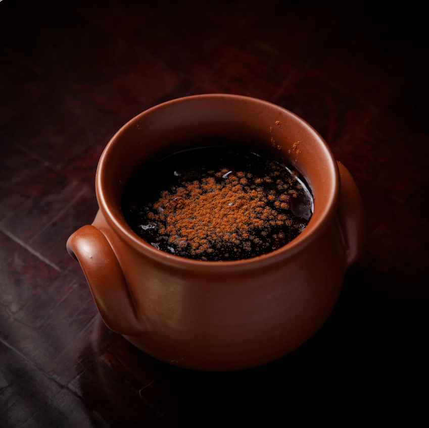
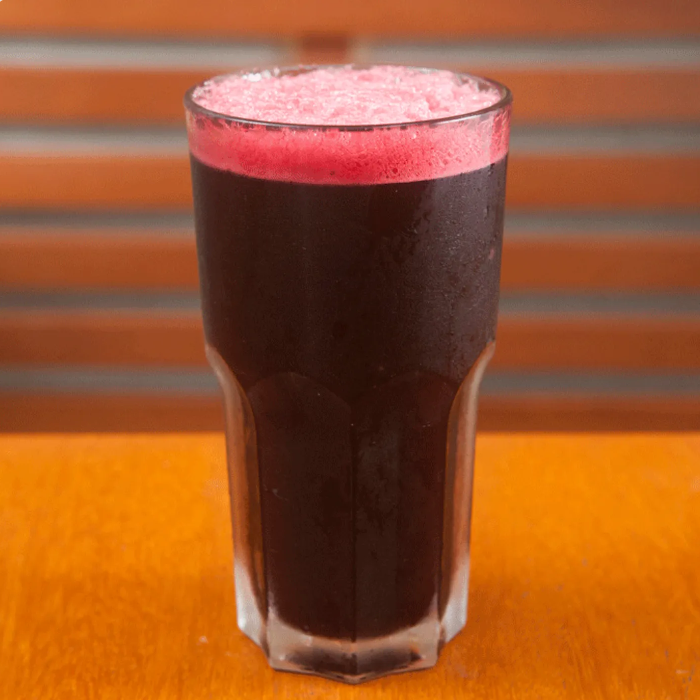

En Punto & Criollo, entendemos que una buena comida empieza desde la primera impresión, por eso nuestras entradas criollas han sido cuidadosamente seleccionadas para abrir el apetito y ofrecer una muestra del sabor y tradición que caracteriza a la cocina peruana. Cada plato ha sido elaborado con ingredientes frescos y técnicas caseras que rescatan el auténtico sabor criollo, convirtiendo cada entrada en una verdadera experiencia gastronómica.
 |
Boliyucas de Queso |
Masa de yuca y quesos, acompañadas de salsas huancaína y ocopa. |
S/. 32.00 |
 |
La causa limeña de pollo |
Con abundante relleno, palta y huevo. |
S/. 43.00 |
 |
Chicharrón de pollo |
En su jugo al ajo |
S/. 43.00 |
|  |
Papa a la huancaína clásica |
Con su huevo y aceituna. |
S/. 32.00 |
|
Croquetas de ají de gallina |
Con su cremita de aceituna botija. |
S/. 39.00 |
|
|
Empanada de pastel de choclo |
Rellena de choclitos tiernos y carne guisada a fuego lento. |
S/. 18.00 |
|
|
Empanada de rocoto relleno |
Al estilo Panchita, rellena de carne guisada a fuego lento, queso y rocoto. |
S/. 18.00 |
|
 |
Papa rellena |
Una papa rellena acompañada de crema de rocoto y sarza criolla. |
S/. 32.00 |
|
Pastel de choclo |
Relleno de carne guisada. |
S/. 56.00 |
|
|
Tamalito verde |
Con jugo de seco y sarza criolla. |
S/. 21.00 |
En Punto & Criollo, nuestras sopas tradicionales son una expresión del hogar peruano. Desde el sabroso aguadito, lleno de sabor y tradición, hasta el reconfortante caldo criollo, cada cucharada está pensada para brindar bienestar y rescatar recetas que han acompañado generaciones. Ideales para días fríos o simplemente para disfrutar de un sabor profundo y auténtico.
|  |
Aguadito |
En punto espeso de pollo y gallina, arroz, papa amarilla, ají y culantro. |
S/. 43.00 |
|  |
Levántate Criollito |
Caldo de gallina Panchita, con ravioles rellenos de gallina, papa, fideos y rocotito. |
S/. 48.00 |
|  |
Sopa criolla |
Con carne picada, fideos, ají, huevo y pan frito. |
S/. 43.00 |
|  |
Super aguadito |
Un generoso aguadito de pollo al estilo casero. |
S/. 34.00 |
|
Croquetas de ají de gallina |
Con su cremita de aceituna botija. |
S/. 39.00 |

Nuestros platos de fondo son el alma de la cocina peruana. Ofrecemos una variedad irresistible de clásicos criollos como el olluquito, el lomo saltado y el ají de gallina. Cada preparación refleja nuestra pasión por los sabores intensos, los ingredientes frescos y la sazón casera. Este menú está pensado para quienes buscan una experiencia completa, llena de tradición, abundancia y sabor criollo del bueno.
|  |
Ají de gallina |
El plato favorito de los limeños. |
S/. 49.00 |
|  |
Arroz con chanchito |
Con costillitas de chancho según receta antigua limeña. |
S/. 78.00 |
 |
Cau cau de mondongo |
Nuestros precios están expresados en soles e incluyen impuestos de ley y recargo al consumo. |
S/. 49.00 |
 |
Ceviche clásico |
De pesca del dia marinado en leche de tigre, con choclo, camote y ese saborcito antiguo |
S/. 49.00 |
|
Chanfainita |
La servimos con fideos a la criolla, mote, papa a la huancaína y rocoto bravo.p> |
S/. 46.00 |
|
|
Lomo saltado |
El clásico con papas y arroz. |
S/. 78.00 |
|
|
Mancha pecho |
De carapulcra con sopa seca. |
S/. 59.00 |
|
|
Menestrón |
Punta de pecho, pasta, verduras, queso fresco y crema huancaína. |
S/. 50.00 |
|
|
Milanesa de pollo |
Servida sobre nuestros tallarines verdes y su toque de huancaína. |
S/. 58.00 |
|
|
Milanesa de lomo |
Servida sobre nuestros tallarines verdes y su toque de huancaína. |
S/. 79.00 |
|
|
Olluquito con charqui |
Según receta antigua le añadimos su punto de chalona.. |
S/. 46.00 |
|
|
Patita con maní |
Una patita con maní con mucho más que patita. |
S/. 49.00 |
|
 |
Tallarines Limeños |
Tallarines verdes con papa a la huancaína y huevo de corral. |
S/. 39.00 |
|
Tallarín saltado de pollo |
A la criolla saltado con cebollas, tomates y varios ajíes. |
S/. 59.00 |
|
|
Tallarín saltado de lomo |
A la criolla saltado con cebollas, tomates y varios ajíes. |
S/. 78.00 |
Los postres son más que un antojo: son una dulce tradición que honra nuestras raíces. Desde el infaltable arroz con leche y la mazamorra morada, hasta el clásico suspiro a la limeña, cada postre está preparado con esmero, siguiendo recetas caseras que evocan el calor del hogar. Nuestros dulces criollos son el complemento perfecto para finalizar una experiencia gastronómica llena de sabor peruano.
 |
Arroz con leche |
Tradicional postre con arroz, leche y canela. |
S/. 23.00 |
 |
Budín |
Amelcochado con plátano, manzana, toque de ron y bañado en crema inglesa. |
S/. 23.00 |
 |
Mazamorra Combinada |
El arroz con leche y la mazamorra morada juntos y en su punto. |
S/. 23.00 |
|  |
Mazamorra morada |
Típico en nuestra repostería limeña con piña, durazno y guindones. |
S/. 23.00 |
|
Picarones con miel de higos |
Con su miel de hojas de higos y especias. |
S/. 23.00 |
|
|
Torta de chocolate |
Mojadita con abundante manjar y fudge de la casa. |
S/. 24.00 |
Nada mejor que una bebida típica para acompañar un buen plato criollo. En Punto & Criollo ofrecemos desde la refrescante chicha morada, hecha con maíz morado, hasta el clásico emoliente caliente, ideal para días fríos. También contamos con maracuyá casero, limonada y gaseosas locales. Nuestras bebidas están pensadas para refrescar, hidratar y acompañar cada comida con el sabor natural y auténtico que nos representa.
|  |
Chicha morada |
1000 ml |
S/. 32.00 |
 |
Mango huarango |
Mango, naranja y plátano (500ml) |
S/. 16.00 |
 |
La Pintona |
Tumbo, mandarina y naranja |
S/. 16.00 |
 |
Limonada |
236 ml |
S/. 11.00 |
 |
Limonada de hierba buena |
236 ml |
S/. 11.00 |
|
Andea con gas |
330 ml |
S/. 13.00 |
|
|
San Luis con gas |
350 ml |
S/. 7.50 |
|
|
San Mateo sin gas |
600 ml |
S/. 9.00 |